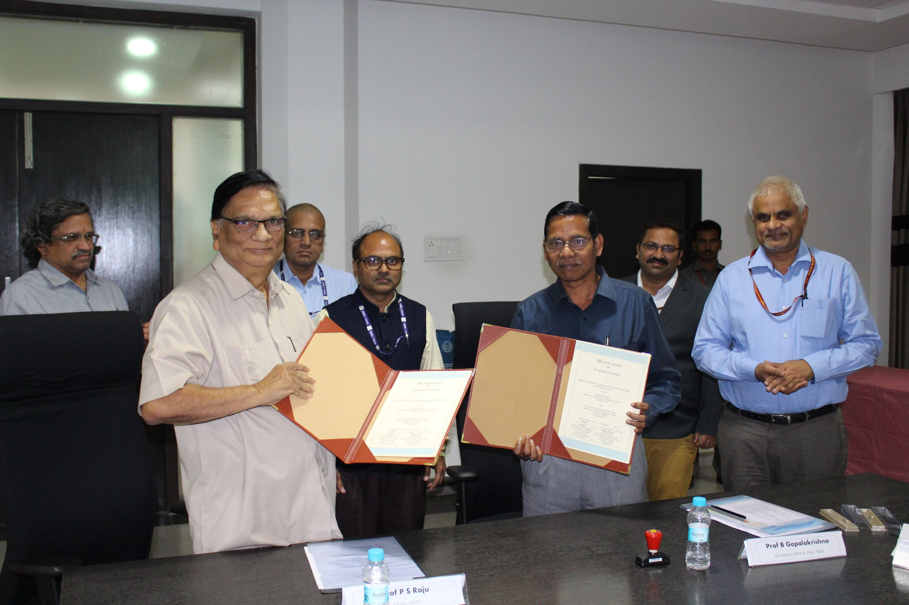
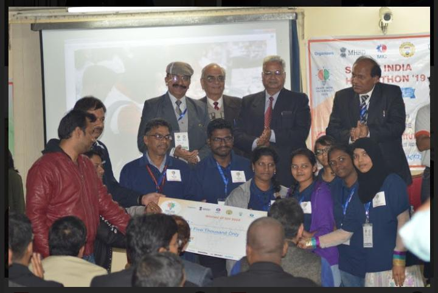
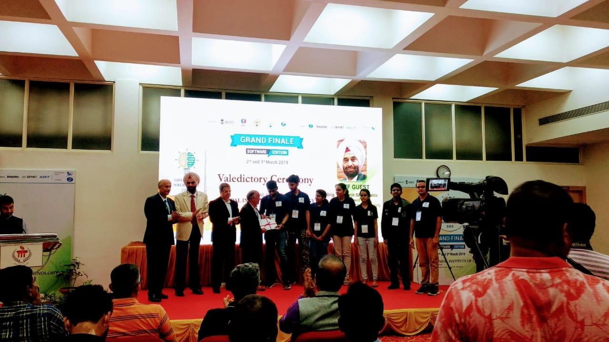
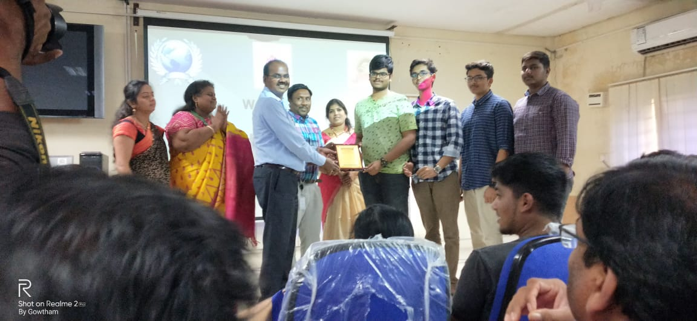
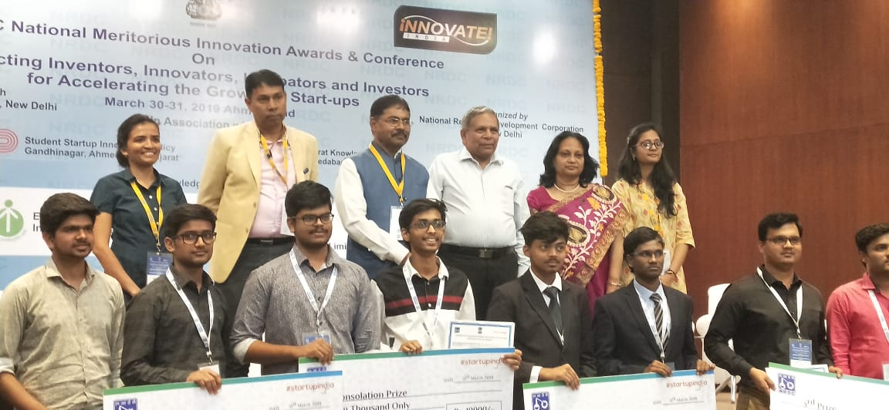

Dr.S.N.N.Pandit
Dr.S.N.N,Pandit was a renowned statistician who graduated from IIT Kharagpur and worked at Dibrugurh University, Osmania University and Central University at Hyderabad. He was the founder and director of Center for Quantitative methods at Osmania university. He supervised more than 30 PHDs and guided several M.Tech projects. He was a consultant for GRIET during 2003-2004. He is the spirit behind AAC.
Dr.Satteluri R.K.Iyengar
Dr.Iyengar worked for GRIET between 2004-2012. He gave a fresh direction to AAC bringing in several computational aspects of science and engineering. He is as important as Dr.S.N.N. Pandith in sustaining the spirit of AAC
Advanced Academic Center (AAC) is an inter-disciplinary research center of GRIET, Hyderabad. AAC is dedicated to excellence in teaching, learning and research, and is continuing to flourish advancements in this modern world. It predominantly focuses on a broad problem area and brings together experts possibly with varied background to conduct research and development on specific aspects of that problem area, constantly pushing the science to the next level. The AAC furnishes a sublime platform for many students with ingenious thinking, who are willing to do some initiative in experimentation of the latest technologies, faculty are engaged with teaching and research to push the boundaries of student innovations. For the students who are excited to scrutinize the biggest issues of the 21st century, AAC offers an unparalleled student experience and a generous financial aid program.
Ever since it started AAC has focused on illustrious legacy of training students to become competent and compassionate researchers. This center gives a fillip to research, teaching and entrepreneurship. The broad and versatile nature of the center sparks imaginative and inventive insights and solutions. We encourage students to get trained as a scientific and technical personnel to fulfill the society needs in science and technology.
Advanced Academic Center (AAC) aspires to be a pre-eminent and inclusive student-focused research unit, preparing young minds in design thinking and innovation for societal problems.
As an innovation center with the capacity to attract and engage the
best talent in the institute.
AAC supports student success by:
- Encouraging global study, experiential learning, interdisciplinary scholarship, creativity, and entrepreneurial endeavours
- Promoting a culture of innovation and discovery
- Supporting faculty, staff, and student collaboration in creative activity and research that address emerging opportunities and societal needs
The Advanced Academic Center (AAC) is a facilitator which blends the ideology of GRIET with industry requirement to expand R&D collaboration. Why Us? Leverage the AAC’s intellectual leadership and R&D infrastructure to resolve your current and future challenges.
The AAC provides a diverse range of expertise through the following provisions :
- Sponsored / Consultancy R&D projects
- Advanced Lab facility
- Workshops and short term courses
- Faculty visiting fellowship
- Mentorship from real time industrial experts
AAC has a brief history. The seed was sown by eminent statistician Prof. S. N. Narahari Pandit way back in the year 2004. It started as a discussion forum where faculty members from various disciplines would meet to interact about the latest scientific research. It continued to function that way till Prof. S. R. K. Iyengar joined GRIET in 2004. A fresh lease of life was infused during his stay particularly from 2008 to 2012, when he retired from active service. Currently AAC has embraced all engineering departments of GRIET with active contribution from not just the faculty but also seniors.
As the name suggests, AAC excites students and staff to work on inter-disciplinary projects leading to out of the box thinking. It is very heartening to mention that both senior and talented young faculty members are associated with AAC. Students work with them with a free mind which produces some high-quality output. AAC designs and executes projects for students, organizes workshops on specialized engineering software and hardware tools and also organizes special lectures which are domain specific.
An AAC lab under this center was established by senior AAC students in 2018-19 involving ARDUINO and RASPBERRY PI applications to carry out mini projects.
Students can be admitted at the beginning of the first and second year of B.Tech. Lateral entry students are also admitted.
1. Signing an MOU with NRSC:

Getting a MOU with NRSC is one of the milestones in the history of AAC. Though it took a long time which involved several meetings with the NRSC. The scientists were very much impressed by the interest shown by the students and their capability of handling a project. The students are going to do research projects under the guidance of NRSC.
2. Vishwakarma Award 2018:

Our students created an Automated Book Lending machine which bagged the prestigious Vishwakarma Award given by the AICTE for the year 2018. The machine automatically provides books based on the info given by the user at the screen.
3. Secured 1st position in SIH 2019 software edition:

Students from CSE department secured 1st position in Smart India Hackathon, 2019, Software-Edition with the solution titled- “Chat-bot with Inventory Management system for Dalmia Cements”. The team was leaded by Khairunnisa Begum, P. Nani, Riya singh, Kukutla Kavya, Mannam Divya and Mora Malavika .
Abstract:
The project proposal was to create a chat-bot which can run on both Android and iOS. It takes requests from users through text or voice and based on inputs it gives the details of that order which user places.
4. Secured 2nd position in SIH 2019 software edition:

Students from CSE department secured 2nd position in Smart India Hackathon, 2019, Software-Edition with the solution titled- “Automatic Active Server Communication Alert System”. The team included is U. Taran Rishit, Vineeth Alluri, Sushmitha Potluri, Akhil Anil M, Subitra Pawar, Sai Krishna A.
Abstract:
The goal at hand is to provide a service that will keep an eye on the client’s servers and inform them immediately if anything goes wrong, so that the client can instantly start making amends The client must be notified through an SMS alert immediately upon failure of any of their servers The current server status is also updated on the web app, where it is always available.
5. Several Hackathons winners (Students of first years):

Students of 1st year have proved themselves with their innovative idea in the events SNIST (1st Prize), JNTUH Quest (2nd Prize), NRDC (4th or Consolation Prize) and Excite (going to participate now). The team included is Santosh Sanjeev, P. Gowtham Sai, K. Bharath Varma and B. Jaswanth Kranthi.
Abstract:

People who are speech-impaired face difficulty in communicating with others who do not know the sign language or their gestures . Our product converts gestures (standard Indian sign language ) into audio output by using machine learning
People who are speech-impaired face difficulty in communicating with others who do not know the sign language. This project aims at eliminating this communication gap. This is done by using a prototype hand worn glove which converts hand gestures into speech, thus enabling speech-impaired people to effectively communicate with everyone. This would help the billions of lives worldwide who are speech-impaired
6. Expanding our horizons with industry:


Industrial experts like Satish Yellanki, GVK Madhav and Pradeep Palelli agreed to provide our students with industrial case studies and further putting into development and implementation.
7. Drone Development from the scratch:
We have completed Drone development course for 3 months and built a basic drone with pixhawk flight controller as slave and raspberry pi as master and it is under development with Machine learning and computer vision groups of AAC to detect and recognize an object and we are also aiming to make that drone autonomous and work is going on to control drone with hand glove containing MPU6050.